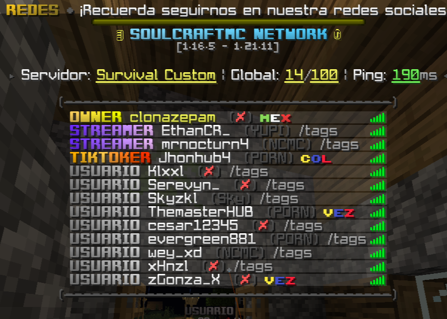
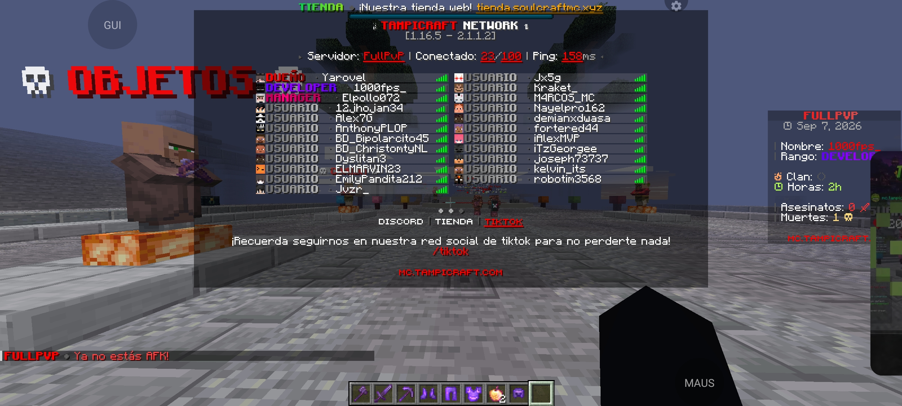
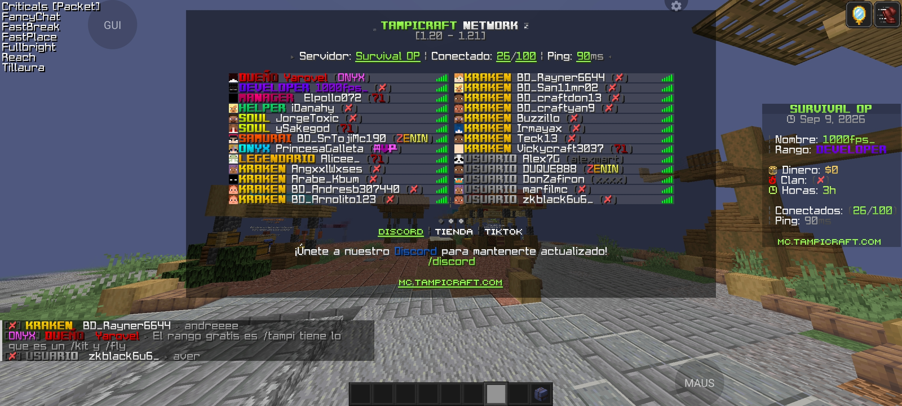

Networks de Minecraft
Configuración de servidores, proxies, plugins, permisos, interfaces, sistemas y puesta a punto.
Me gusta convertir ideas en proyectos que se sientan completos. Trabajo con Networks de Minecraft, configuraciones, plugins, paneles para hostings y bots de Discord de todo tipo.

SOBRE MÍ
Soy BELCEBÚ, enfocado en configuración de Minecraft, desarrollo de plugins y creación de sistemas para comunidades.
También desarrollo paneles para hostings, interfaces web y bots de Discord de distintos tipos, desde sistemas de tickets y moderación hasta herramientas personalizadas.
Minecraft Developer · Web · Discord
SERVICIOS
Configuración de servidores, proxies, plugins, permisos, interfaces, sistemas y puesta a punto.
Interfaces web para administrar servicios, servidores, recursos y herramientas de hosting.
Bots personalizados para tickets, logs, moderación, invitaciones, backups, utilidades y más.
Configuraciones avanzadas, YAML, bases de datos, integraciones y sistemas personalizados.
EXPERIENCIA

Trabajo relacionado con configuración, sistemas y puesta a punto de una Network de Minecraft.

Proyecto de Network donde he trabajado en configuración y sistemas de Minecraft.
Configuración de interfaces, TAB, sistemas y diferentes elementos visuales de una Network.
STACK
¿TRABAJAMOS?
Si necesitas una Network, un panel para hosting, un bot de Discord o un sistema personalizado, puedes contactarme.